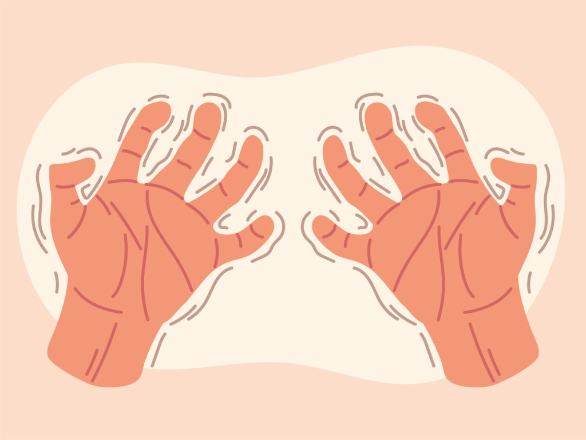

O que são doenças neurodegenerativas?
As doenças neurodegenerativas são uma série de condições que afetam o sistema nervoso, causando a degeneração progressiva dos neurônios. Com o envelhecimento e fatores genéticos ou ambientais, essas doenças tornam-se mais prevalentes, afetando milhões de pessoas ao redor do mundo. Entre as mais conhecidas estão o Alzheimer, Parkinson e a Esclerose Lateral Amiotrófica (ELA), cada uma com sintomas e impactos específicos, mas todas compartilham uma característica comum: o enfraquecimento gradual das funções cognitivas e motoras.
Apesar de ainda não terem cura, avanços científicos oferecem tratamentos que ajudam a melhorar a qualidade de vida e retardar a progressão dos sintomas.
Principais doenças neurodegenerativas
Alzheimer: É a forma mais comum de demência, principalmente entre os idosos, caracterizada pela perda gradual das habilidades cognitivas, como memória, linguagem, raciocínio e concentração. A doença é marcada pela formação de placas amiloides e emaranhados neurofibrilares no cérebro, que prejudicam a comunicação entre as células nervosas.
Parkinson: Afeta o sistema nervoso central, em particular os neurônios da substância negra, que são responsáveis pela produção de dopamina, neurotransmissor essencial para o controle dos movimentos. A degeneração progressiva desses neurônios resulta em uma redução nos níveis de dopamina no cérebro, causando alterações motoras como tremores, rigidez muscular, lentidão dos movimentos e perda de equilíbrio.
ELA: Afeta os neurônios motores, responsáveis pelo controle dos músculos voluntários, levando a uma paralisia motora irreversível e progressiva. Funções como fala, movimento, deglutição e respiração são gradualmente comprometidas, enquanto a capacidade cognitiva geralmente permanece preservada. A doença é temida pela perda de funcionalidade e autonomia, com a maioria dos pacientes falecendo entre 3 e 5 anos após o diagnóstico.

Ice Bucket Challenge: A "ALS Association" (ALSA) criou um movimento nas redes sociais, denominado Ice Bucket Challenge (Desafio do Balde de Gelo, em português), com o objetivo de angariar fundos para ajudar os doentes com ELA.
O desafio consiste da pessoa publicar um vídeo de si própria a tomar um banho de água gelada, desafiando depois outras pessoas a fazê-lo. Os desafiados têm 24 horas para aceitar o desafio ou doar para a instituição.
O movimento #icebucketchallenge tornou-se viral nas redes sociais após um ex-capitão de beisebol norte-americano Pete Frates, portador da doença, postar na rede um vídeo na qual desafia algumas pessoas a contribuir com a ALS Association. O fenômeno foi replicado em todo o mundo, angariando fundos para as associações homólogas de outros países.
Causas e fatores de risco
Embora a causa exata de muitas dessas doenças ainda seja desconhecida, diversos fatores de risco têm sido investigados. Tais fatores incluem uma combinação de influências genéticas, ambientais e de estilo de vida. O próprio envelhecimento é o principal fator de risco para muitas dessas doenças, devido ao desgaste natural das células nervosas e das funções cerebrais. Apesar de nem todos esses fatores poderem ser controlados, alguns podem ser mitigados através de mudanças no estilo de vida.
- Envelhecimento: À medida que a expectativa de vida aumenta e a população envelhece, a incidência dessas doenças se torna cada vez mais prevalente.
- Fatores genéticos: Mutações em genes que afetam o cérebro, podendo ser herdadas ou espontâneas. Essas mutações geram proteínas defeituosas que se acumulam nas células nervosas, causando danos e aumentando o risco de desenvolvimento precoce ou mais intenso de doenças neurodegenerativas.
- Fatores ambientais: Exposição a toxinas, metais pesados, pesticidas, poluição do ar e traumatismos cranianos podem contribuir para o desenvolvimento dessas doenças.
- Processos inflamatórios: A inflamação crônica no cérebro pode acelerar a degeneração neuronal.
- Estilo de vida: O estilo de vida influencia o risco de doenças neurodegenerativas. Dietas ricas em alimentos processados e açúcar, sedentarismo, obesidade, hipertensão e diabetes aumentam esse risco. Além disso, o tabagismo acelera o declínio cognitivo, e o consumo excessivo de álcool pode causar danos cerebrais.
Sintomas comuns
As doenças neurodegenerativas afetam o sistema nervoso de maneiras distintas, mas compartilham uma série de sintomas comuns que impactam a qualidade de vida dos pacientes. Cada condição apresenta características próprias, mas algumas manifestações clínicas, como alterações motoras, cognitivas e comportamentais, podem ser observadas em mais de uma dessas doenças. A tabela a seguir oferece uma comparação dos sintomas mais frequentes no Alzheimer, Parkinson e Esclerose Lateral Amiotrófica (ELA), ajudando a compreender as semelhanças e diferenças entre esses distúrbios neurológicos.
| Sintomas | Alzheimer | Parkinson | Esclerose Lateral Amiotrófica |
|---|---|---|---|
| Perda de memória | Muito comum | Raro | Raro |
| Problemas emocionais | Comum | Comum | Comum |
| Tremores | Ausente | Comum, principalmente em repouso | Ausente | Lentidão de movimentos (bradicinesia) | Raro, possível em estágios mais avançados | Muito comum | Raro, geralmente fraqueza |
| Fraqueza muscular | Raro, mas possível em estágios avançados | Presente em estágios avançados | Muito comum e um dos primeiros sintomas |
| Rigidez muscular | Raro | Comum, afeta principalmente membros e tronco | Presente, mas devido à fraqueza |
| Dificuldade para andar | Eventual, geralmente em fases avançadas | Comum, devido à rigidez e desequilíbrio | Muito comum |
| Alterações na fala | Comum em estágios moderados e avançados | Comum | Muito comum, com dificuldade crescente para articular palavras |
| Dificuldade para engolir | Ocorre nas fases finais | Possível em estágios avançados | Muito comum |
| Problemas de sono | Comum | Comum | Pode ocorrer, devido ao comprometimento respiratório |
Diagnóstico
O diagnóstico de doenças neurodegenerativas é desafiador devido a vários fatores. Primeiramente, os sintomas dessas doenças, nos estágios iniciais, podem ser inespecíficos e comuns a diversas condições, dificultando o diagnóstico preciso. Além disso, muitas dessas doenças progridem lentamente, e os sinais iniciais podem ser sutis, o que pode atrasar o diagnóstico precoce. Outro desafio é a ausência de um teste único que possa diagnosticar todas essas condições de forma definitiva.
Apesar desses desafios, o diagnóstico pode ser auxiliado por:
- Exames clínicos: Avaliação do histórico médico do paciente, análise geral dos sintomas e funções neurológicas, como memória, movimento e reflexos. O médico também observa a progressão dos sintomas ao longo do tempo para ajudar a diferenciar as doenças e orientar na escolha de exames complementares.
- Exames de imagem: Ressonância Magnética (RM), Tomografia Computadorizada (TC) e Tomografia por Emissão de Pósitrons (PET) são frequentemente utilizados para identificar alterações no cérebro.
- Testes neuropsicológicos: Avaliam as funções cognitivas, como memória, atenção, linguagem e habilidades motoras.
- Exames laboratoriais: Análises de sangue e líquido cefalorraquidiano podem ajudar a descartar outras causas e identificar marcadores biológicos específicos.
Tratamento
O tratamento das doenças neurodegenerativas ainda é um desafio, e o foco principal é em controlar os sintomas e retardar a progressão da doença, já que muitas não têm cura. Alguns dos tratamentos disponíveis incluem:
Medicamentos
- Alzheimer: Medicamentos que aumentam a quantidade de acetilcolina no cérebro, como os inibidores da colinesterase, podem melhorar temporariamente a memória e outras funções cognitivas.
- Parkinson: Levodopa e outros medicamentos que aumentam os níveis de dopamina são utilizados para controlar os sintomas motores, como tremores e rigidez.
- ELA: Riluzole é o único medicamento aprovado para o tratamento da ELA, reduzindo a progressão da doença e prolongando a vida do paciente, porém seu efeito é limitado.
Terapias não farmacológicas
- Fisioterapia: Ajuda a manter a força muscular e a flexibilidade.
- Terapia ocupacional: Ensina estratégias para compensar as dificuldades e manter a independência em atividades diárias.
- Fonoaudiologia: Auxilia na comunicação e na deglutição.
- Psicologia: Oferece suporte emocional ao paciente e à família.
OBS: Os tratamentos disponíveis podem aliviar os sintomas, mas não revertem a progressão da doença; e os medicamentos podem causar efeitos colaterais, o que limita seu uso.
É importante ressaltar que o tratamento é individualizado, levando em consideração as condições e as necessidades específicas de cada paciente e, por isso, deve ser acompanhado por uma equipe multidisciplinar de profissionais da saúde.
Prevenção e hábitos saudáveis
Embora não existam garantias de prevenção, a adoção de hábitos saudáveis podem reduzir o risco de desenvolvimento dessas condições ou retardar sua progressão, pois desempenham um papel fundamental no fortalecimento da reserva cognitiva, ajudando a preservar a saúde cerebral e a criar uma base mais sólida para o cérebro lidar com o desgaste ao longo do tempo.
Reserva Cognitiva
A reserva cognitiva é a capacidade do cérebro de compensar danos ou mudanças ao longo do tempo, como aquelas causadas pelo envelhecimento ou por doenças neurodegenerativas. Pessoas que exercitam o cérebro ao longo da vida, com estudos, atividades intelectuais e sociais, desenvolvem uma reserva maior, ou seja, conseguem resistir melhor aos efeitos de danos cerebrais, mantendo suas habilidades cognitivas por mais tempo. É como se o cérebro tivesse "recursos extras" para lidar com danos e perdas.
✕Exemplos de hábitos saudáveis:
- Atividade física regular
- Alimentação saudável
- Interação social
- Leitura e escrita
- Aprendizado de novas habilidades
- Jogos de raciocínio lógico, quebra-cabeças, palavras cruzadas
- Redução de estresse
- Sono de qualidade
- Terapias cognitivas
- Evitar o tabagismo e o consumo excessivo de álcool
Obs: A prevenção das doenças neurodegenerativas é mais eficaz quando adotada ao longo da vida, com a implementação de hábitos saudáveis e estímulos cognitivos desde a juventude. Por isso, o acompanhamento clínico regular é essencial para monitorar a saúde cerebral, identificar sinais precoces e fornecer orientações personalizadas para minimizar os fatores de risco e retardar o progresso das doenças. O diagnóstico precoce, aliado a mudanças no estilo de vida, aumenta as chances de um envelhecimento saudável e de uma melhor qualidade de vida.
Tecnologias e avanços científicos
A pesquisa sobre doenças neurodegenerativas, como Alzheimer, Parkinson e (ELA), têm avançado significativamente nos últimos anos. Embora ainda não haja cura para essas condições, os cientistas estão cada vez mais próximos de entender suas causas e desenvolver tratamentos mais eficazes.
Alguns dos avanços no diagnóstico e no tratamento incluem:
Pesquisadores estão identificando biomarcadores, ou seja, substâncias ou características que podem indicar a presença da doença em estágios iniciais, permitindo um diagnóstico mais precoce e um acompanhamento mais preciso da progressão da doença.
O sequenciamento genético tem revelado diversas mutações associadas a doenças neurodegenerativas, o que está permitindo a identificação de grupos de risco e o desenvolvimento de terapias genéticas.
Pesquisas focadas na regulação e remoção de proteínas malformadas, como a beta-amiloide no Alzheimer e a alfa-sinucleína no Parkinson, têm avançado, oferecendo novas possibilidades terapêuticas.
A terapia celular, que consiste na utilização de células-tronco ou células progenitoras para reparar o tecido cerebral danificado, mostra-se promissora para o tratamento de algumas doenças neurodegenerativas.
Com o avanço da tecnologia, surgiram ferramentas de monitoramento remoto que possibilitam aos médicos acompanhar a progressão de doenças neurodegenerativas de maneira mais prática e eficiente. Dispositivos vestíveis, por exemplo, coletam dados sobre atividade cerebral, padrões de sono e função motora, fornecendo informações essenciais para diagnósticos e tratamentos.
A IA está revolucionando o diagnóstico ao analisar grandes volumes de dados de imagem, como ressonâncias magnéticas, e identificar padrões que podem passar despercebidos por métodos tradicionais, permitindo diagnósticos mais rápidos e precisos.
Essas tecnologias estão sendo integradas para avaliar e reabilitar pacientes com doenças neurodegenerativas, promovendo simulações interativas que ajudam a monitorar funções motoras e cognitivas de forma inovadora.
Abaixo segue algumas das pesquisas científicas mais recentes:
Previsão precoce de Alzheimer com Inteligência Artificial
Cientistas da Universidade de Cambridge, na Inglaterra, desenvolveram um modelo inovador de IA capaz de prever se pessoas com comprometimento cognitivo leve progredirão e desenvolverão o Alzheimer. Esse modelo utiliza dados acessíveis, como testes cognitivos e ressonâncias magnéticas, evitando métodos invasivos. Validado em clínicas do Reino Unido e Singapura, o modelo obteve alta precisão, superando métodos tradicionais. Ele conseguiu identificar corretamente 82% dos pacientes que desenvolveram a doença de Alzheimer e 81% dos que permaneceram estáveis. Essa precisão ajuda a reduzir significativamente diagnósticos incorretos e permite intervenções mais direcionadas.
Para saber mais, clique aqui para ler o artigo completo.
Manipulação genética para reativar a produção de novos neurônios em cérebros envelhecidos
Pesquisadores da Universidade de Stanford, nos EUA, utilizaram a técnica CRISPR-Cas9 para manipulação genética, identificando genes que podem reativar células-tronco neurais em cérebros envelhecidos. Nos estudos com ratos, essas intervenções aumentaram a produção de novos neurônios e aliviaram os impactos do envelhecimento cerebral, apontando caminhos promissores para tratar doenças como Alzheimer e Parkinson. Além de explorar o transporte de glicose e a organização de cílios primários, a pesquisa destaca o potencial da genética na regeneração neural. Embora os resultados sejam promissores, os experimentos ainda estão na fase pré-clínica, sem aplicações em humanos.
Para saber mais, clique aqui para ler o artigo completo.
Medição do movimento ocular para avaliação de doenças neurodegenerativas
Pesquisadores do Departamento de Neurociência da NeuraLight Ltd., em Israel, exploraram como os movimentos oculares podem ser usados como indicadores valiosos para diagnosticar e monitorar doenças neurodegenerativas, como
Para saber mais, Clique aqui para ler o artigo completo.
O futuro da pesquisa sobre doenças neurodegenerativas é promissor. Com o avanço da tecnologia e a colaboração entre pesquisadores de diferentes áreas, espera-se que em breve possamos contar com tratamentos mais eficazes e até mesmo uma cura para essas doenças.